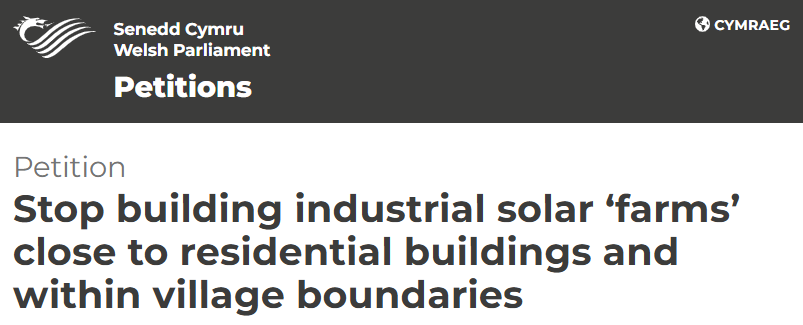

A planning application has been submitted to install a giant solar farm into the middle of several housing estates, in the rural village of Trefeglwys in Powys, Wales. You can see the actual estates and a mock-up of the solar farm in the banner image above (credits in footer).
The plan places 1528 x 2.1 x 1.1 metre solar panels within less than 10 metres of some properties, directly in front of their living rooms, with no fences or other visual break inbetween. Please note that the mock-up is missing two large elevated buildings that should be on the left side of the photo, towering above the hedgerows and panels.
A fair question, and the answer probably depends on your proximity to the panels - but some combination of:
-
Property Values: Opinions vary, ranging from "no effect" to "say goodbye to 25% of your property value". The largest study of its kind (commissioned by beneficiaries of the solar industry) found that buyers will pay £600 GBP more per year (£15,000 GBP over the course of a regular mortgage) not to live within kilometers of a solar farm. This farm will be 100 times closer to our homes.
Don't think it'll only affect us, though. A solar farm in the village, especially so close to a large proportion of the houses is likely to affect prices farther afield, too.
-
Precedent: This is low-value land, on a floodplain - it can't be used for anything except this or grazing. This isn't just about this one solar farm - if this application goes through, it opens the flood gates to use almost any land in any location within the village, county and potentially wider, for solar farms.
It's us today, but it could be your neighbouring field or village tomorrow - and once one passes, the rest will be virtually unstoppable!
Click the image below to sign the petition to prevent this from spreading:
- 
-
Legal Process is Being Ignored: The plan states that the site is 0.9 hectares, but the SAB (SuDS Approval Body) has established it as > 1.0 hectare. That means it qualifies as a "Major Development" according to Article 2 of the Town and County Planning (Development Management Procedure) (Wales) Order 2012 (DMPWO), which in turn means that there are all sorts of additional legal obligations which haven't been met, such as:
- Making draft planning application documents available to view
- Providing a 28 day pre-application consultation period
- Providing written notice to all owners/occupiers of properties adjoining the site
- Reporting on how the pre-application consultation was undertaken and how peoples views were considered, in a 'Pre-Application Consultation Report', submitted as part of the application
The SuDS Approval Body (SAB) rejected it due to "fundamental flaws" - their words, not ours!
Missing Wildlife Surveys. Otters have been rescued in the local area. Local residents are aware of both Bats and Natterjack Toads in the area - the former are a regular sight around and over the proposed site and the latter have been seen. All of these, as well as Great Crested Newts (which may also be present) are protected under various UK and EU laws, and it's incumbant on the Local Planning Authority to request surveys of the applicant and delay development until they've been provided. The presence of these animals has been raised with the Local Planning Authority, through multiple objections. There are a further 14 species on Wales' protected lists for which there are records of them present within 1km of the proposed site.
Inconsistencies and Errors: The plan is full of inconsistencies, errors, omissions, exaggerations and "liberties with the truth"
Plans Changed after Official Responses. Plans have been revised following key decisions, rendering some of the information they were based upon no longer correct. If the plans change, shouldn't officials be asked if it affects their decisions?
-
Bait and Switch - the applicant, Colin Powell's company, Powell Developments is the developer of the Plas Trannon and Maes Trannon housing estates, directly adjoining the proposed solar farm. They sold many of these properties as "Premium", achieving a tidy premium in the process, using phrases in the advertising such as:
- "Excellent far reaching valley views with southerly aspect"
- "Potential buyers will be very impressed with ... the excellent sunny outlook over the garden and views across the Trannon Valley"
- "Stunning Views to rear aspect"
They told buyers that they couldn't build anything in this area of the field, due to it being a floodplain. Now, they intend to devalue all of these "premium" properties, built by and purchased from them, at the buyers' expense yet again, in what can only be described as an exhibition of moral bankruptcy.
They own at least 300 acres of land and have multiple properties currently on the market, where they've been for over a year because they're overpriced, but they don't need to sell them fast. They don't need to use this particular site, and they don't need to devalue anyone's house in order to build a solar farm. Indeed, they have a field outside their own house that they could use instead. This is pure developer greed, at our expense.
Councillors' Premature Decisions: Councillors publicly declared that they'd made up their minds before they were supposed to. Part way through the public notice period, and before they're legally allowed to discuss it with each other due to declared conflicts of interest, they'd already made up their minds.
Errors and Omissions Ignored: Councillors are happy to approve the plan in spite of all of the errors, glaring omissions, missed legal processes and government bodies (SAB) explicitly telling them they can't, as you'll see throughout this page
On 15th January, 2024, an A4 paper notice was placed on the entrance gate to the field adjacent to Plas Trannon and Maes Trannon in Trefeglwys, announcing a Planning Application to build a 0.6 Megawatt solar farm on the field.
This website documents some of the community's response to the proposal itself, the process and council handling of it, because there are many aspects regarding the handling of this application which appear questionable.
Many concerns have been raised with the council by the community, via multiple channels, and they appear to have been ignored. The process is opaque and possibly being subverted. Many within the community feel that the decision is a foregone conclusion, and actions and comments by councillors appear to support this.
We'll detail some of the contradictions, errors and omissions in the proposal, as well as legal matters being overlooked, timeline irregularities, etc.
There are various legal issues with the application as it stands, for example:
Qualifying as a Major Development means that legal obligations such as a mandatory pre-application consultation, imposed by section 61Z of the Town and County Planning Act 1990 have not been met. Further provision is contained in Part 1A of the DMPWO.
The SuDS Approval Body (SAB) says SAB approval is required, and that the information provided by the applicant is "fundamentally flawed", and that the "requirement to obtain SAB consent is enforceable in a similar manner to planning law". "It is a requirement to obtain SAB consent in addition to planning consent."
Otters are a protected species and a "material planning consideration for local planning authorities (LPAs)" - orphaned Otter cubs were rescued from Trannon Holiday Park, adjacent to the river/field of the proposed site, so there is documented evidence of them in the area. When should the LPA ask for a survey? "distribution and historical records suggest otters may be present" (they do), "development will affect a water body, river, stream, lake, sea or marshland" and "development will affect habitats near a water body directly or through environmental effects".
Great Crested Newts are a protected species and a "material planning consideration for local planning authorities (LPAs)" - When should the LPA ask for a survey? "the development site includes refuges, such as log piles, rubble, grassland, scrub, woodland or hedgerows up to 500 metres of suitable aquatic habitats (static or slow moving water body)".
Natterjack Toads have been seen in the area, are a protected species and a "material planning consideration for local planning authorities (LPAs) - When should the LPA ask for a survey? "the work is near a site with habitat that can support natterjack toads", and "the work could affect the hydrology of a site that supports the toad - toads can inhabit ephemeral (short term) water bodies, such as land drains".
Bats are regularly seen in the area, are a protected species and a "material planning consideration for local planning authorities (LPAs)" - When should the LPA ask for a survey? "distribution and historical records suggest bats may be present" (they do), "the proposals are close to water bodies" and "if a development proposal is likely to negatively affect bats or their: roost habbits, foraging habitats or commuting habitats"
-
A further 14 protected species, listed in the Environment (Wales) Act 2016, Section 7, which Welsh Ministers consider are of key significance to sustain and improve biodiversity in relation to Wales, have been recorded within 1km of the site, and 5 are within 0.5km - according to the National Biodiversity Network Trust, the government-approved record search facility
As the picture opposite shows, the hare has even been kindly photographed by the Powells at their nearby site, Luxury Lodges Wales, for us
- Atlantic Salmon
- Brown/Sea Trout
- Iron Blue Mayfly
- Polecat
- Water Vole
Within a further 0.5km (1km overall of the site):
- Brown Hare
- Brown Long-eared Bat
- Bullfinch
- Dunnock
- House Sparrow
- Song Thrush
- Spotted Flycatcher
- Starling
- Wood Warbler
What has been done to evaluate and ensure that no harm will be done to these species, or to licence any permitted risk?
3 weeks notice?
- The single posted sign was blown away in a storm and not replaced for a week, so it was only 2 weeks notice
- During which time, councillors had already made their decisions known, so they didn't allow for the notice period to expire before deciding
- The notice was inaccessible and somewhat unreadable even during the 2 weeks it was there
- Plans were amended during this period, so there was even less time for the public to review and consult on the amendments
- The SuDS Approval Body have stated that their approval is required and they won't give it with the current state of the plans, so further amendments are required. How can public notice and review period expire prior to the finalising of the plans to the official consultees' satisfaction?
- The SAB-established site area is greater than 1 hectare, so there was a mandatory 4 week pre-application consultation phase and requirement for adjacent properties to be individually notified, neither of which occurred
As noted above, the community is feeding back our concerns via the Make a Comment tab on the Powys Government Planning Application Comments website, or via the email address provided on the notice placed on 15th January. So far, no one has received a response to any of their objections. In light of this, and the fact that "In light of recent data protection incidents, it is considered that the risk resulting from publishing third party correspondence is too great", we've decided to publish our own thoughts for public dissemination.
(It wouldn't have been too hard to anonymise comments, instead, would it? They managed it for the councillor ones)
We also created a Community Views Form, in order to gauge and visualize community sentiment, as this is also sadly lacking from the process. Community sentiment is clear:

We'll give you 1 guess who the positive responses are from...
Despite community efforts and dozens of objection letters, there's been no engagement or feedback from the Local Planning Authority at all, other than councillors attempting to discourage people from attending a public meeting, and declaring their intention to approve the plans regardless of the objections so far.
There is no evidence that our objections have been read or considered at all - in fact, given the strength and basis of many of them, it would seem that they are not being considered with appropriate levels of concern.
There's a complete lack of transparency and accountability, and several of the councillors have declared conflicts of interest.
Questions we'd like responses to, in particular:
Have the SAB concerns below been addressed to the SAB's satisfaction, and how? If not, why not?
Having reviewed the information provided by the applicant, the SAB deem the surface water drainage strategy (SWDS) is fundamentally flawed
As the SAB deem the Surface Water Drainage Strategy (SWDS) as fundamentally flawed, the Lead Local Flood Authority (LLFA) would recommend refusing the application until such time as the applicant is able to demonstrate that a SAB Compliant SWDS is designed for the site
No drainage details have been submitted with this application
If the applicant was to submit further information to confirm how the surface water is being managed and also indicated that it is being managed in a way that would be broadly SAB compliant, we would be happy to reconsider our recommendation for refusal. Without further information, we would continue to recommend refusal
The requirement to obtain SAB consent sits outside of the planning process but is enforceable in a similar manner to planning law. It is a requirement to obtain SAB consent in addition to planning consent. Failure to engage with compliant SuDS design at an early stage may lead to significant unnecessary redesign costs.

-
Based on Non-Material Amendment for Phase 2 of Plas Trannon, there should have been hedgerows planted behind the houses bordering the field in question. These should have reduced the visual impact of the proposed solar farm on the properties closest to it. These hedgerows (and other items from the same amendment) were never planted.
In light of the evidence that the applicant has previously failed to comply with their own plans, and the impact that this will now certainly have in relation to and in concert with the current application, as well as the fact that no one has previously ensured the completion of works to plan:
- Who will be responsible for ensuring that the less convenient parts of this plan, such as the conditions recommended by the consultant Ecologist are adhered to?
- What recourse is available, should the applicant fail to follow through with planning requirements?
- Will the applicant be required to install the missing hedgerow from 19/0767/NMA, and if so, by when?
- Will the applicant be required to comply with the other areas they have currently not completed with respect to 19/0767/NMA, such as the new native species trees highlighted in plans, and if so, by when?
- If the applicant will not be required to comply with the previous NMA, what recourse is available to residents negatively impacted?
Boundaries - Existing hedgerows retained. New native hedge to south east & south west of site.
New native species trees shown by coloured in circles
-
Policy RE1 - Renewable Energy states that proposals shall make provision for the restoration and after-care of the land for its beneficial re-use. The application doesn't come close to achieving that; it simply states "The solar panels will easily be removed from site when their use has come to an end".
That isn't even a commitment by the applicant to remove them, but there are further issues with this statement:
- The applicant has made no commitment to remove the panels at the end of their life
- The application is in the name of the applicant, therefore in the event that the applicant is unavailable to remove the panels (see above), the onus doesn't fall to his present company, Powell Developments Ltd, so it presumably falls on the council?
- In all cases, it seems that the monitoring, maintenance, removal and funding thereof falls on the council and local tax-payers
- There's no analysis of the work required, and indeed the applicant's "analysis" of the complexity is irrelevant, because presently, he won't be performing or managing it
Consequently, we ask the following questions of the Local Planning Authority:
- Who is going to remove the panels?
- What work is involved? By our amateur reckoning, at least: placing of temporary hardstanding, disconnection from the National Grid, removal of 1528 solar panels, removal of 40 sets of PV tables and up to 480 piles, removal of unknown other equipment housed in the 2 buildings, removal of the buildings, removal of the 600mm concrete bases to the buildings, removing temporary hardstanding, cleaning up, road and project management
- How much will all of this cost and what will the funding source be?
- If the applicant doesn't have to fund their removal, why not?
- Given the significant life-span of PV panels and other equipment, and the requirement for ongoing monitoring and maintenance as well as removal, what's the succession/continuity plan?
There are significant laws in this area which haven't even been mentioned in passing, let alone satisfactorially addressed or mitigated. The installation, grid connection (G99 compliance, Distribution Network Operator (DNO) approval, protection devices, ensuring the system reaches all technical and safety standards), maintenance, grid disconnection and de-installation work all needs to be performed by qualified personnel, no doubt at significant expense.
There's a glaring lack of acknowledgement of the work required to install, monitor, maintain and remove the SPEN sub-station and Electric Housing.
These buildings will presumably contain inverters, batteries, wiring, high voltages and capacitances, a connection to the National Grid? Therefore we ask the same 5 questions as above about these - where are the provisions?
Proposals shall make provision for the restoration and after-care of the land for its beneficial re-use.
The solar panels will easily be removed from site when their use has come to an end. The extent of land that would need to be restored would be minimal and the site could easily be reverted to it’s existing agricultural use.
-
"Satisfactory mitigation shall be in place to reduce the impact of the proposal and its associated infrastructure". How does the application achieve that with respect to:
The solar panels in question generate DC voltage. This requires converting into AC before feeding into the National Grid, using Grid-Tied inverters. Inverters aren't 100% efficient and inverters for an installation of this size will generate significant heat, for example, a representative efficiency of 95-98% means that 2-5% of the 825KWp (kilowatt-peak) system suggested here would mean 16.5 - 41.3 kW of heat generated, per hour, at peak. Batteries can be even less efficient (generate more heat) during charging and discharging cycles.
What equipment will be used to store, convert and transmit this power? What heat will be generated? How will this heat be effectively and safely dissipated? If liquid cooling is to be used, what type of liquid, and if oil (and in any case), what are the potential environmental impacts of any failures in these systems, and how are they being mitigated?
Satisfactory mitigation shall be in place to reduce the impact of the proposal and its associated infrastructure.
Why did anonymous Ward Councillor, the day after the above comment from the SuDS Approval Body, state the following, when there's an outstanding requirement to obtain SAB consent? How can they be in support of an application which has, so far, failed to reach even the base legal requirements?
I am in general support of the application

Why is the same anonymous Ward Councillor declaring their "general support" for an application in the middle of a questionnably conducted 3 week public notice period, and claiming that they have read the public's comments before the end of the public notice period?
I have reviewed the application in detail, along with responses received through the planning portal and taken on board residents comments.
I am in general support of the application

-
Why is the anonymous Ward Councillor declaring their "general support" for an application when the following are all true?
- Details about the sewage pipe (previously known to the Planning Authority) and the damage mitigation thereof has not been provided in the application
- Wildlife surveys for the protected species known to be in the area, or falling into descriptions where their presence or absence must be established, has not been provided in the application
- Proof that the area claimed in the application is correct and the area established by the SAB is incorrect has not been provided
- Confirmation that the official consultees who lodged no objections to the original plan, have no new objections following the revisions has not been sought
- Their judgement was rendered part way through the public consultation period, prior to many community objections being received, yet they claim to have read them
How is the impartiality of councillors ensured, and if we have concerns regarding bias in the process, where do we lodge our concerns with someone removed from the process?
I have reviewed the application in detail, along with responses received through the planning portal and taken on board residents comments.
I am in general support of the application
-
Where are the wildlife surveys for Otters, Bats, Great Crested Newts, Natterjack Toads and other protected species that are either definitely present in the area, or may be present in the area? As noted in the Legal Challenges / Issues section, these are a material planning consideration for local planning authorities. We have dated confirmations/signed-for receipts and copies of multiple objections in which you were informed of their presence, although it's not the community's responsibility to prove their existence. It's the Local Planning Authority's responsibility to ensure that the developer is following all applicable laws regarding protected species, and so far there is no evidence of either, but plenty of evidence proving the proximity of such protected species.
-
The SuDS Approval Body (SAB) have disagreed with the site area assessment in the application. SAB's assessment puts the site at over 100m2 (1 hectare), which qualifies the proposal as a "major development" (see Legal Challenges / Issues section for links). Why is the planning committee not treating it as such and rejecting it, or requiring revisions to the plan to reduce the site area? A "major development" carries legal requirements which have not been met and cannot retrospectively be met.
As members of the community, we're not aware of and haven't been involved in pre-application consultation process
A draft planning application was not made available to view
A 28-day pre-planning consultation period hasn't happened
A copy of the site notice was not sent to owners/occupiers of land adjoining the application site and community consultees
There's no Pre-Application Consultation Report submitted as part of the application
Proposals for all types of renewable and low carbon energy development and associated infrastructure either on their own, cumulatively or in combination with existing, approved or proposed development, shall comply with all other relevant policies in the LDP.
Furthermore, the SuDS Approval Body (SAB) deem that the construction area is greater than 100m2


-
The field in which the installation is planned includes a soil pipe approved as part of Planning Application 20/0967/NMA. According to details of that application, the soil pipe runs directly underneath the location of the new panels, which are to be on "steel piles inserted 1.5-1.6m deep". Soil pipes are usually 600-1500mm deep, but may sometimes only be 300mm deep. The application isn't specific as to the depth of installation, but whatever their depth, if they follow the norm, it's clear that the piles will be inserted at least as deep as the soil pipe.
The plans don't provide any assurance that the soil pipe won't be damaged, and the LPA doesn't appear to have requested such assurances.
This seems like a critical thing to understand before planning can be approved?
The solar panels are supported on a galvanised steel "table" structure which is supported on "C" section steel piles inserted 1.5 – 1.6m deep. A full size table has 12 piles, 6 front and 6 rear
-
Planning Application (6.2) states: "However, even if the panels were technically located in the flood zone – the manner of their construction (piled) and no concrete proposed, it means that there will be no land taken up as part of the proposal".
- There's no "if" about it. The panels are located in the flood zone, as clearly shown elsewhere in the plans, NRW and other responses
- Now that the plans have been revised, both the Sub-station and Electric Housing will now be raised on 600mm concrete, rendering this statement incorrect
Planning Application
The planning application details can be found here
Legal Problems with the Application
See the Legal Challenges / Issues section
Press Coverage
Social Media Discussions
Community Response